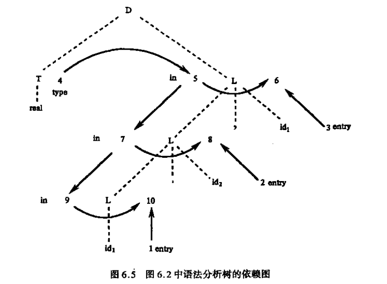
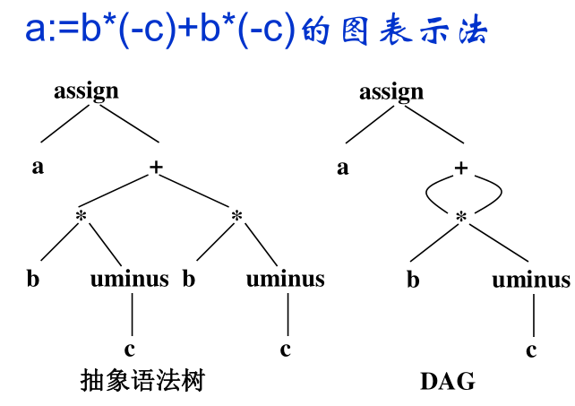

语义分析和中间代码生成
属性文法和语法制导翻译
属性文法
属性文法: 在上下文无关文法的基础上给每个文法符号增加若干属性
语义规则: 对于文法的每个产生式配备了一组属性的计算规则
- $b:=f(c_1,c_2,…,c_k)$
- 产生式左边的综合属性和右边的继承属性必须提供语义规则
- 语义规则所描述的工作可以包括属性计算、符号表操作、静态语义检查、代码生成等等。
属性加工的过程即是语义处理的过程
属性
- 综合属性: 在语法树中, 通过子节点的属性计算出来的属性(自下而上)
- 继承属性: 在语法树中, 通过父节点和兄弟节点的属性计算出来的属性(自上而下)
- 终结符只有综合属性, 有lexer提供
S-属性文法
只包含综合属性的文法
L-属性文法
如果每个产生式A→X1…Xj-1Xj…Xn的每条语义规则计算的属性或者是A的综合属性；或者是Xj的继承属性，但它仅依赖：
- 该产生式中Xj左边符号X1, X2, …, Xj-1的属性；
- A的继承属性
语法制导翻译
语法制导翻译法:
- 基于属性文法的处理过程:
输入串->语法树->依赖图->语义规则计算次序 - 由源程序的语法结构所驱动
作用
- 产生中间代码
- 产生目标指令
- 对输入串进行解释执行
依赖图
用DAG表示属性依赖关系
- 每个属性一个结点
- 语义规则中左边属性依赖右边每一个属性

树遍历法
- 无环图
- DFS
- 从左到右
一遍扫描法
- 在语法分析的同时计算属性值
- S-属性文法适合于一遍扫描的自下而上分析
- L-属性文法适合于一遍扫描的自上而下分析
语义分析和中间代码生成
语义分析
中间语言
中间语言是复杂性界于源语言和目标语言之间的语言
好处:
- 便于进行与机器无关的代码优化工作
- 易于移植
- 使编译程序的结构在逻辑上更为简单明确
常用的中间语言:
- 后缀式(逆波兰式)
- 图表示
- DAG
- AST
- 三地址代码
- 三元式
- 四元式
- 间接三元式
后缀式:
- 二元操作符后置
- (一元操作符后置)
- 去括号
1 | a+b*(c+d/e) |
1 | b:=-c*a+-c*a |
抽象语法树: 去掉对翻译不必要的信息, 更有效表示源程序的语法树

DAG
- 一个内部结点代表一个操作符，它的孩子代表操作数
- 一个DAG中代表公共子表达式的结点具有多个父结点

三地址代码: x:=y op z
- 三地址代码可以看成是抽象语法树或DAG的一种线性表示
- 分类
- 四元式
- 三元式
- 间接三元式
赋值语句的翻译
布尔表达式的翻译
控制语句的翻译
过程调用的翻译
推荐文章